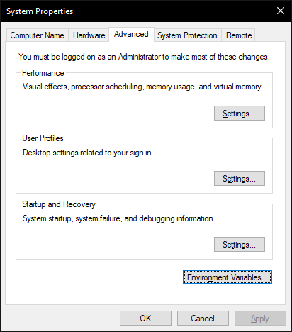

Siteye girip indirip next next yapiyoruz
Onemli: burada uygulamayi calistirmiyoruz
MSYS 3 adet shellden olusuyor. biri 32bit, biri 64bit, biri msysi kustomize etmek amacli. burada secili olani calistiriyoruz
Once genel bir update yapiyoruz bu komutla. buyuk kucuk harf hassas burada
Kurulacak uygulamalari bu sekilde kuruyoruz. derleyici (gcc) ve debugger (gdb) onemli. digerleri istege bagli.
"mingw-w64-x86_64-gcc" demek yerine "gcc" demek icin stringin ilk kismini degiskene atiyoruz.
onemli: bu shellde p="..." ile p = "..." farkli anlama geldigi icin bosluk koymuyoruz.
msys2 nin sundugu butun packagelerin listesi icin https://repo.msys2.org/mingw/x86_64/ var
sfml kurmak icin sadece {p}sfml yeterli.
Bu adimi yapmamizin sebebi istedigimiz terminalden gcc yazarak gcc'ye erismek icin $PATH i degistirmek.
Tamamdir =) Simdi vsCode ile C kodu derlemeye calisalim.
Eger boyle bir hata almiyorsaniz burayi atlayin

Bu menuye erismek icin ctrl+shift+B. Olmuyorsa da ustteki menuden bulun
Yey =)
Simdi sfml i dogru bir sekilde derlemek icin buralari degistirelim
-l... olan yere -lsfml-system -lsfml-window -lsfml-graphics yaziyoruz. (audio ve networking kullanacaksak onlari da yaziyoruz)
Onemli: burada -l aslinda cizgi ve kucuk L harfi.
Bunlar dinamik kutuphane (dll) ve programin derlenmesi icin gerekli.
Kodda da include etmek icin:
#include <SFML/Graphics.hpp>
demek yeterli =)
Burada da duz cmd kullanarak derlemesini gosteriyorum.
sfml kullanarak birsey derlemek icin:
g++ main.cpp -lsfml-system -lsfml-window -lsfml-graphics